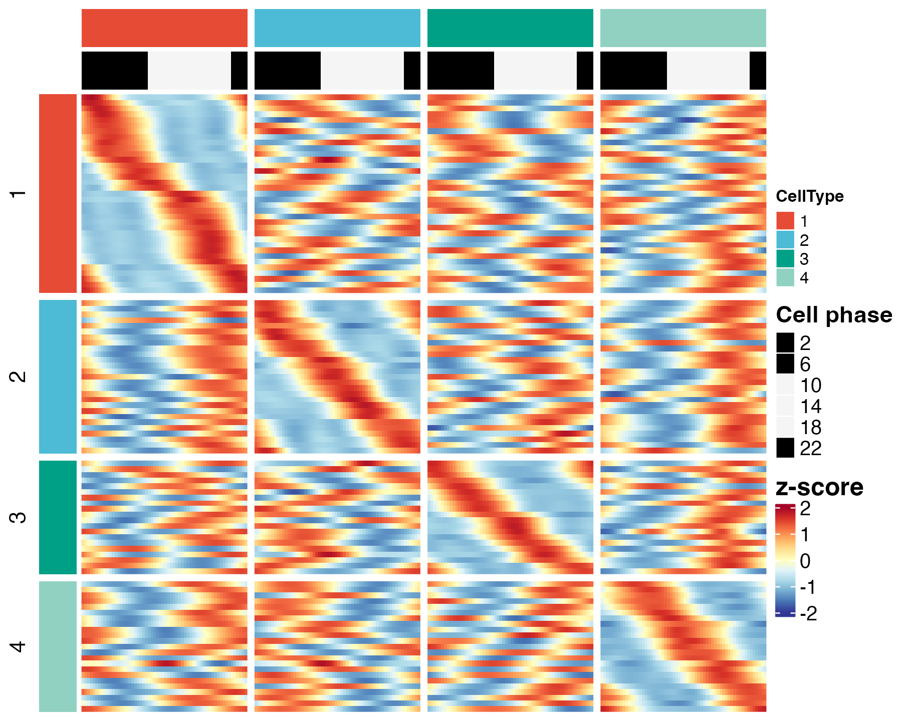

ovr-analysis.RmdThis tutorial describes the one-vs-rest rhythmic program discovery
workflow in scRhythmBayes.
The one-vs-rest branch is designed for heterogeneous tissues and multi-cell-type datasets. It compares one target cell type against all remaining cell types and identifies cell-type-specific rhythmic programs.
This branch starts from the gene-level rhythmic parameter layer. It is different from pairwise rhythm-state module analysis:
| Analysis | Main question | Typical use case |
|---|---|---|
| Pairwise module analysis | How do rhythmic states differ between two predefined groups? | Condition A versus condition B within one
cell type |
| One-vs-rest analysis | Which rhythmic programs are specific to one target cell type relative to all other cell types? | Cell-type-specific rhythmic program discovery in heterogeneous tissue |
In this tutorial, the workflow is:
library(scRhythmBayes)
data("srb_example_data")
count <- srb_example_data$Count
metadata <- srb_example_data$meta
dim(count)
#> NULL
head(metadata)
#> cell ZT celltype condition T_true Theta_true
#> Cell00001 Cell00001 0 1 A 23.3400755 6.1104175
#> Cell00002 Cell00002 0 1 B 23.7670342 6.2221950
#> Cell00003 Cell00003 0 1 B 0.9221928 0.2414295
#> Cell00004 Cell00004 0 1 B 1.9315598 0.5056812
#> Cell00005 Cell00005 0 1 A 0.9730132 0.2547343
#> Cell00006 Cell00006 0 1 A 1.1848616 0.3101960
table(metadata$celltype)
#>
#> 1 2 3 4
#> 1000 1000 1000 1000
table(metadata$celltype, metadata$condition)
#>
#> A B
#> 1 502 498
#> 2 501 499
#> 3 501 499
#> 4 502 498The two required input objects are:
| Object | Description |
|---|---|
count |
Gene-by-cell count matrix |
metadata |
Cell-level metadata containing cell IDs, cell-type labels, and sampling time |
For the example dataset, metadata$celltype defines the
cell-type groups used for OVR testing.
The OVR workflow first requires a cell-level circadian phase
estimate. Here, phase is inferred using celltype as the
stratum.
res_phase <- infer_cell_phase(
count = count,
metadata = metadata,
ZT_by = "ZT",
strata_by = "celltype",
Species = "mouse",
setseed = 1,
Verbose = FALSE
)
head(res_phase)
#> # A tibble: 6 × 7
#> cell ZT_input stratum theta_pred ZT_pred Rbar r_cell
#> <chr> <dbl> <chr> <dbl> <dbl> <dbl> <dbl>
#> 1 Cell00001 0 1 0.0444 0.169 0.999 0.999
#> 2 Cell00002 0 1 6.21 23.7 0.979 0.998
#> 3 Cell00003 0 1 0.570 2.18 0.994 0.998
#> 4 Cell00004 0 1 0.829 3.17 0.991 0.990
#> 5 Cell00005 0 1 6.26 23.9 0.995 0.999
#> 6 Cell00006 0 1 0.553 2.11 0.998 0.999The key output columns used downstream are:
| Column | Description |
|---|---|
cell |
Cell identifier |
theta_pred |
Inferred cell-level circadian phase in radians |
ZT_pred |
Inferred cell-level circadian phase converted to 24-hour time |
r_cell |
Cell-level phase reliability weight |
For OVR analysis, gene-level rhythmic parameters should be estimated
across cell types. Therefore, use
strata_by = "celltype".
res_ovr_param <- infer_gene_param(
count = count,
metadata = metadata,
theta_pred = res_phase$theta_pred,
r_cell = res_phase$r_cell,
strata_by = "celltype",
B = 10,
n_worker = 1,
setseed = 1,
Verbose = FALSE
)The main table used by infer_ovr_rhythm() is
param_long.
head(res_ovr_param$param_long)
#> gene celltype Mesor Amplitude Phase Alpha Dropout_rate
#> 1 Cdkn1a 1 -0.02762582 2.686816 3.738887 0.08053933 0.4191739
#> 2 Mmp14 1 -0.59442628 2.874521 4.029714 0.12570493 0.4218473
#> 3 Clock 1 -0.42565821 3.604569 6.015929 0.04570863 0.2737957
#> 4 Per2 1 -0.20480520 2.487120 3.398507 0.11007750 0.3431087
#> 5 Per1 1 -0.29496969 2.457057 4.738964 0.05918745 0.4967964
#> 6 Bmal1 1 -2.34096740 2.737424 1.320406 0.41694809 0.5077025
#> LRT_stat P_value FDR Mean beta1_est beta2_est
#> 1 625.5160 1.482287e-136 4.906370e-135 0.9727523 -2.22162151 -1.5110854
#> 2 528.4449 1.776860e-115 2.205527e-114 0.5518791 -1.81345087 -2.2303061
#> 3 1366.5046 1.850535e-297 1.837581e-294 0.6533396 3.47660326 -0.9519159
#> 4 570.4683 1.331617e-124 2.542876e-123 0.8148060 -2.40548911 -0.6319701
#> 5 448.3350 4.418758e-98 2.759640e-97 0.7445542 0.06528929 -2.4561890
#> 6 169.5388 1.531528e-37 3.691279e-37 0.0962345 0.67828578 2.6520594
#> log_alpha_est logit_pi_est conv_code
#> 1 -2.5190096 -0.32616554 0
#> 2 -2.0738180 -0.31519443 0
#> 3 -3.0854681 -0.97544910 0
#> 4 -2.2065706 -0.64947118 0
#> 5 -2.8270457 -0.01281456 0
#> 6 -0.8747936 0.03081239 0The long-format parameter table contains one row per gene and cell type.
| Column | Description |
|---|---|
gene |
Gene name |
celltype |
Cell-type group |
Mesor |
Baseline rhythmic expression level |
Mean |
Mean expression level |
Amplitude |
Rhythmic amplitude |
Phase |
Rhythmic phase in radians |
FDR |
Adjusted rhythmicity significance |
infer_ovr_rhythm() compares each target cell type
against the pooled rest.
res_ovr <- infer_ovr_rhythm(
param_long = res_ovr_param$param_long,
group_by = "celltype",
q_cut = 0.05,
amp_cut = 0.25,
Verbose = FALSE
)
head(res_ovr$ovr_result)
#> gene TargetCellType RestCellTypes rhythm_pattern FDR_group1
#> 1 Cdkn1a 1 2,3,4 Other 4.906370e-135
#> 2 Mmp14 1 2,3,4 Other 2.205527e-114
#> 3 Clock 1 2,3,4 Other 1.837581e-294
#> 4 Per2 1 2,3,4 Other 2.542876e-123
#> 5 Per1 1 2,3,4 Other 2.759640e-97
#> 6 Bmal1 1 2,3,4 Other 3.691279e-37
#> FDR_group2 Mean_group1 Mean_group2 Amplitude_group1 Amplitude_group2
#> 1 7.512171e-145 0.9727523 0.6754654 2.686816 2.811678
#> 2 2.929127e-116 0.5518791 0.6751436 2.874521 3.087992
#> 3 7.247446e-124 0.6533396 0.7569091 3.604569 3.146503
#> 4 1.088094e-130 0.8148060 1.1573551 2.487120 2.726876
#> 5 6.822243e-166 0.7445542 0.9958452 2.457057 2.673835
#> 6 4.777116e-95 0.0962345 0.3231072 2.737424 3.177257
#> Phase_group1 Phase_group2 Delta_Mean Delta_Amp target_specific_flag
#> 1 3.738887 NA 0.2972869 -0.1248619 FALSE
#> 2 4.029714 NA -0.1232645 -0.2134709 FALSE
#> 3 6.015929 NA -0.1035695 0.4580651 FALSE
#> 4 3.398507 NA -0.3425491 -0.2397568 FALSE
#> 5 4.738964 NA -0.2512910 -0.2167782 FALSE
#> 6 1.320406 NA -0.2268727 -0.4398324 FALSEThe main thresholds are:
| Argument | Description |
|---|---|
q_cut |
FDR cutoff for rhythmicity |
amp_cut |
Minimum target-group amplitude cutoff used for target-specific calls |
The OVR result is a gene-by-target-cell-type table.
| Column | Meaning |
|---|---|
gene |
Gene name |
TargetCellType |
Target cell type being tested |
RestCellTypes |
Pooled non-target cell types |
rhythm_pattern |
One-vs-rest rhythm-state pattern |
FDR_group1 |
Rhythmicity FDR in the target group |
FDR_group2 |
Rhythmicity FDR in the pooled rest group |
Mean_group1, Mean_group2
|
Mean expression in target and rest groups |
Amplitude_group1, Amplitude_group2
|
Rhythmic amplitude in target and rest groups |
Phase_group1, Phase_group2
|
Rhythmic phase in target and rest groups |
Delta_Mean |
Target-minus-rest mean difference |
Delta_Amp |
Target-minus-rest amplitude difference |
target_specific_flag |
Whether the gene is classified as target-specific |
A typical target-specific rhythmic program is expected to have strong rhythmic evidence and sufficient amplitude in the target cell type, with weaker or absent rhythmic evidence in the pooled rest.
The OVR heatmap visualizes target-associated rhythmic programs across the heterogeneous dataset.
ht_ovr <- plot_ovr_heatmap(
count = count,
res_phase = res_phase,
ovr_result = res_ovr$ovr_result,
metadata = metadata,
celltype_by = "celltype",
Verbose = FALSE
)
ht_ovr
#> scRhythmOVRHeatmap object
#> Genes: 105
#> Smoothed phase columns: 240
#> TargetCellType n_target_gene n_cells
#> 1 1 35 1000
#> 2 2 27 1000
#> 3 3 20 1000
#> 4 4 23 1000
plot(ht_ovr)
The heatmap is intended to help inspect whether OVR-selected genes show cell-type-associated phase-resolved expression patterns.
The target_specific_flag column can be used to extract
candidate cell-type-specific rhythmic genes.
target_specific <- res_ovr$ovr_result[
res_ovr$ovr_result$target_specific_flag %in% TRUE,
]
head(target_specific)
#> gene TargetCellType RestCellTypes rhythm_pattern FDR_group1 FDR_group2
#> 48 Eri1 1 2,3,4 Target 1.079817e-57 0.4501122
#> 75 Lmod2 1 2,3,4 Target 1.786265e-94 0.2679266
#> 116 Prepl 1 2,3,4 Target 8.095385e-77 0.4262382
#> 118 Lonp2 1 2,3,4 Target 4.905208e-126 0.2220031
#> 122 Zfp668 1 2,3,4 Target 7.262414e-119 0.3829377
#> 132 Ifi30 1 2,3,4 Target 3.655586e-102 0.1659153
#> Mean_group1 Mean_group2 Amplitude_group1 Amplitude_group2 Phase_group1
#> 48 0.3968220 0.6815102 2.384054 0.0949792 1.304013
#> 75 0.3540766 0.5465417 2.930676 0.1265566 3.988342
#> 116 0.1992822 0.3779180 2.734931 0.1938035 5.734979
#> 118 1.2974518 0.3760899 2.505003 0.2329197 1.315578
#> 122 1.4202644 0.3651883 2.544238 0.1999365 1.520228
#> 132 0.6662888 0.5646155 2.575560 0.1559913 1.131114
#> Phase_group2 Delta_Mean Delta_Amp target_specific_flag
#> 48 NA -0.2846882 2.289075 TRUE
#> 75 NA -0.1924651 2.804119 TRUE
#> 116 NA -0.1786358 2.541127 TRUE
#> 118 NA 0.9213620 2.272083 TRUE
#> 122 NA 1.0550761 2.344302 TRUE
#> 132 NA 0.1016732 2.419569 TRUEThe number of target-specific genes depends on signal strength, the selected thresholds, and the structure of the dataset.
if (nrow(target_specific) > 0) {
table(target_specific$TargetCellType)
}
#>
#> 1 2 3 4
#> 35 27 20 23If no target-specific genes are detected in a small example dataset,
this does not indicate function failure. In real datasets, users may
adjust q_cut and amp_cut based on the expected
signal and desired stringency.
res_phase <- infer_cell_phase(
count = count,
metadata = metadata,
ZT_by = "ZT",
strata_by = "celltype",
Species = "mouse",
setseed = 1,
Verbose = FALSE
)
res_ovr_param <- infer_gene_param(
count = count,
metadata = metadata,
theta_pred = res_phase$theta_pred,
r_cell = res_phase$r_cell,
strata_by = "celltype",
B = 10,
n_worker = 1,
setseed = 1,
Verbose = FALSE
)
res_ovr <- infer_ovr_rhythm(
param_long = res_ovr_param$param_long,
group_by = "celltype",
q_cut = 0.05,
amp_cut = 0.25,
Verbose = FALSE
)
ht_ovr <- plot_ovr_heatmap(
count = count,
res_phase = res_phase,
ovr_result = res_ovr$ovr_result,
metadata = metadata,
celltype_by = "celltype",
Verbose = FALSE
)
plot(ht_ovr)For real datasets, the OVR workflow is most useful when:
For direct comparison of two selected groups, use
infer_rhythm_module() instead. For target-versus-all
discovery across many cell types, use
infer_ovr_rhythm().
sessionInfo()
#> R version 4.5.1 (2025-06-13)
#> Platform: aarch64-apple-darwin20
#> Running under: macOS Sequoia 15.5
#>
#> Matrix products: default
#> BLAS: /Library/Frameworks/R.framework/Versions/4.5-arm64/Resources/lib/libRblas.0.dylib
#> LAPACK: /Library/Frameworks/R.framework/Versions/4.5-arm64/Resources/lib/libRlapack.dylib; LAPACK version 3.12.1
#>
#> locale:
#> [1] en_US.UTF-8/en_US.UTF-8/en_US.UTF-8/C/en_US.UTF-8/en_US.UTF-8
#>
#> time zone: Asia/Shanghai
#> tzcode source: internal
#>
#> attached base packages:
#> [1] stats graphics grDevices utils datasets methods base
#>
#> other attached packages:
#> [1] tidyr_1.3.2 tibble_3.3.1 dplyr_1.2.1
#> [4] Matrix_1.7-5 purrr_1.2.2 future_1.70.0
#> [7] scRhythmBayes_0.1.0
#>
#> loaded via a namespace (and not attached):
#> [1] RColorBrewer_1.1-3 shape_1.4.6.1 rstudioapi_0.18.0
#> [4] jsonlite_2.0.0 magrittr_2.0.5 spatstat.utils_3.2-2
#> [7] farver_2.1.2 rmarkdown_2.31 GlobalOptions_0.1.4
#> [10] fs_2.1.0 ragg_1.5.2 vctrs_0.7.3
#> [13] ROCR_1.0-12 spatstat.explore_3.8-0 htmltools_0.5.9
#> [16] sass_0.4.10 sctransform_0.4.3 parallelly_1.47.0
#> [19] KernSmooth_2.23-26 bslib_0.10.0 htmlwidgets_1.6.4
#> [22] desc_1.4.3 ica_1.0-3 plyr_1.8.9
#> [25] plotly_4.12.0 zoo_1.8-15 cachem_1.1.0
#> [28] igraph_2.3.1 mime_0.13 lifecycle_1.0.5
#> [31] iterators_1.0.14 pkgconfig_2.0.3 R6_2.6.1
#> [34] fastmap_1.2.0 clue_0.3-68 fitdistrplus_1.2-6
#> [37] shiny_1.13.0 digest_0.6.39 colorspace_2.1-2
#> [40] furrr_0.4.0 S4Vectors_0.48.1 patchwork_1.3.2
#> [43] Seurat_5.5.0 tensor_1.5.1 RSpectra_0.16-2
#> [46] irlba_2.3.7 textshaping_1.0.5 progressr_0.19.0
#> [49] spatstat.sparse_3.1-0 httr_1.4.8 polyclip_1.10-7
#> [52] abind_1.4-8 mgcv_1.9-4 compiler_4.5.1
#> [55] withr_3.0.2 doParallel_1.0.17 S7_0.2.2
#> [58] fastDummies_1.7.6 MASS_7.3-65 rjson_0.2.23
#> [61] tools_4.5.1 lmtest_0.9-40 otel_0.2.0
#> [64] httpuv_1.6.17 future.apply_1.20.2 goftest_1.2-3
#> [67] glue_1.8.1 nlme_3.1-169 promises_1.5.0
#> [70] grid_4.5.1 Rtsne_0.17 cluster_2.1.8.2
#> [73] reshape2_1.4.5 generics_0.1.4 gtable_0.3.6
#> [76] spatstat.data_3.1-9 data.table_1.18.2.1 sp_2.2-1
#> [79] utf8_1.2.6 BiocGenerics_0.56.0 spatstat.geom_3.7-3
#> [82] RcppAnnoy_0.0.23 ggrepel_0.9.8 RANN_2.6.2
#> [85] foreach_1.5.2 pillar_1.11.1 stringr_1.6.0
#> [88] spam_2.11-3 RcppHNSW_0.6.0 later_1.4.8
#> [91] circlize_0.4.18 splines_4.5.1 lattice_0.22-9
#> [94] survival_3.8-6 deldir_2.0-4 tidyselect_1.2.1
#> [97] ComplexHeatmap_2.26.1 miniUI_0.1.2 pbapply_1.7-4
#> [100] knitr_1.51 gridExtra_2.3 IRanges_2.44.0
#> [103] scattermore_1.2 stats4_4.5.1 xfun_0.57
#> [106] matrixStats_1.5.0 stringi_1.8.7 lazyeval_0.2.3
#> [109] yaml_2.3.12 evaluate_1.0.5 codetools_0.2-20
#> [112] cli_3.6.6 uwot_0.2.4 xtable_1.8-8
#> [115] reticulate_1.46.0 systemfonts_1.3.2 jquerylib_0.1.4
#> [118] Rcpp_1.1.1-1.1 globals_0.19.1 spatstat.random_3.4-5
#> [121] png_0.1-9 spatstat.univar_3.1-7 parallel_4.5.1
#> [124] pkgdown_2.2.0 ggplot2_4.0.3 dotCall64_1.2
#> [127] listenv_0.10.1 viridisLite_0.4.3 scales_1.4.0
#> [130] ggridges_0.5.7 crayon_1.5.3 SeuratObject_5.4.0
#> [133] GetoptLong_1.1.1 rlang_1.2.0 cowplot_1.2.0